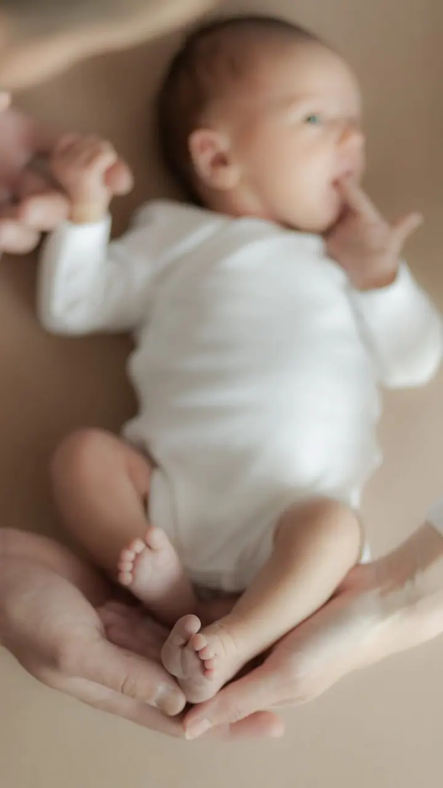
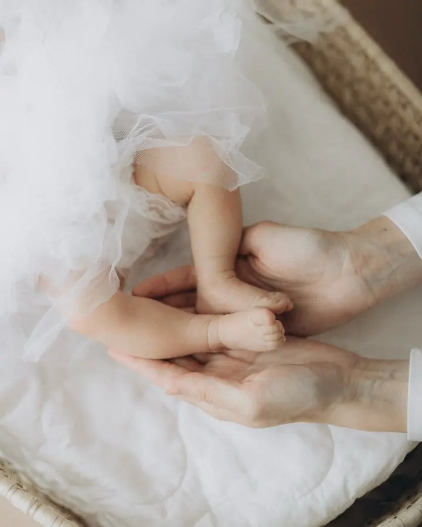
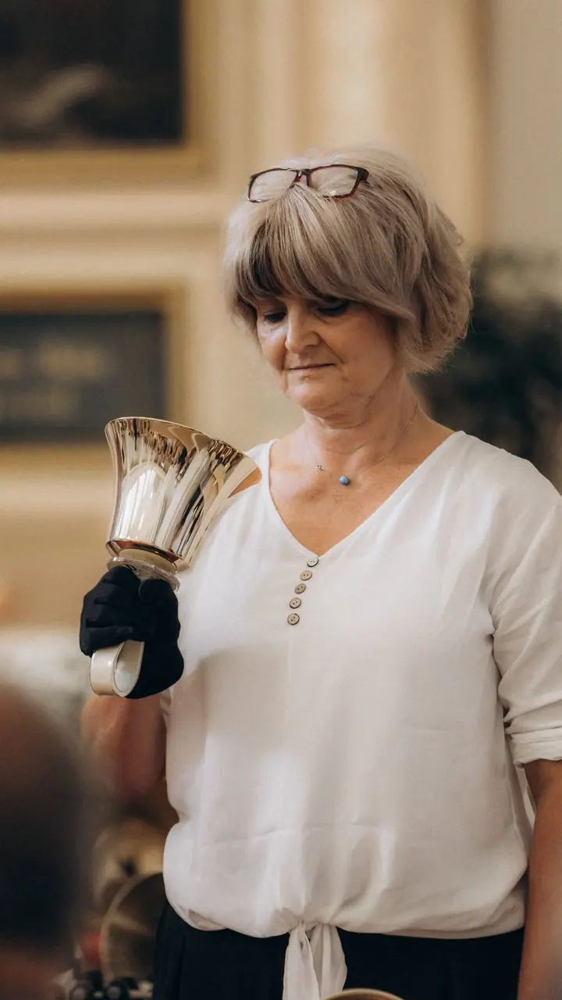

Svatební focení
Svatby nefotím strojeně. Snažím se zachytit sílu daného okamžiku, tak aby fotky působily opravdově. Cena od 1 500 Kč za hodinu.

Jmenuji se Kristýna Potočná a fotím svatby, páry, maminky v očekávání, miminka i celé rodiny. Fotky se nesnažím dělat strojené, chci zachytit sílu daného okamžiku. Najde…
Rezervovat termínJmenuji se Kristýna Potočná, je mi 30 let a mám vystudovanou školu s oborem fotograf. Pod značkou tynastudio se věnuji svatební a lifestyle fotografii, tedy fotkám, které nejsou aranžované, ale vycházejí z toho, co se mezi vámi opravdu děje.


Focení u mě probíhá uvolněně a bez stresu. Nemusíte umět pózovat, stačí být spolu. Miminka fotím u vás doma nebo venku, rodiny a páry tam, kde je vám dobře, a svatby od příprav až po večer.
Fotím hlavně v Rožnově pod Radhoštěm, Valašském Meziříčí, Vsetíně a Zlíně, cestu po Zlínském kraji mám započítanou v ceně. Po domluvě přijedu kamkoliv v Česku. Kromě focení vám ráda navrhnu i fotoknihu, ať vaše fotky nezůstanou jen v počítači.
Co fotím
Svatby nefotím strojeně. Snažím se zachytit sílu daného okamžiku, tak aby fotky působily opravdově. Cena od 1 500 Kč za hodinu.
Miminko fotím u vás doma nebo venku, v klidu a bez spěchu. Focení trvá nejvýš hodinu a půl a dostanete 35 retušovaných fotek v barvě i v černobílé.
Rodinné vzpomínky fotím uvolněně a bez stresu, abyste se cítili přirozeně. Za hodinu focení dostanete 35 retušovaných fotek v barvě i v černobílé.
Hodina klidného focení pro vás dva nebo pro budoucí maminku. Dostanete 30 retušovaných fotek v barvě i v černobílé.
Postup
Pošlete mi zprávu přes formulář nebo na e-mail a napište, jaké focení si představujete a kdy by se vám hodilo.
Společně vybereme termín a místo. Novorozenecké focení můžeme udělat u vás doma nebo venku, ostatní tam, kde se budete cítit dobře.
Fotíme v klidu a bez stresu, většinou do hodiny, u miminek do hodiny a půl. Nic nemusíte hrát, stačí být spolu.
Vyberu a upravím nejlepší snímky, dostanete je retušované v barvě i v černobílé. Platba probíhá převodem na účet po vystavení faktury.
Otázky
Záleží na typu focení. Z rodinného a novorozeneckého focení dostanete 35 retušovaných fotek, z těhotenského a párového 30, vždy v barvě i v černobílé. Každá fotka navíc stojí 150 Kč.
Těhotenské a párové focení stojí 2 500 Kč, rodinné a novorozenecké 2 600 Kč. Svatby fotím od 1 500 Kč za hodinu. Nejsem plátcem DPH.
Cestu po Zlínském kraji mám započítanou v ceně. Po domluvě ráda přijedu i kamkoliv jinam v Česku.
Ano, připravím vám dárkový poukaz na focení podle domluvy. Je to hezký dárek třeba pro budoucí maminku nebo celou rodinu.